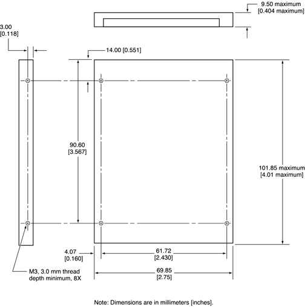

| PATH |

Figure 3-3 shows the maximum dimensions of the hard disk and the location of the mounting holes. The minimum clearance between any conductive components on the drive and the bottom of the mounting envelope is 0.5 mm.
Figure 3-3 Maximum dimensions of the internal hard disk
